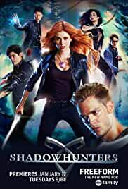

SUPERNATURAL
Supernatural (2005-2020)
"What you don't understand can kill you."

This television drama is about the two Winchester brothers, Sam and Dean, who were raised by their father, John, to hunt and kill all things that go "bump in the night" after his wife, Mary, was murdered by an evil supernatural being when the boys were young. 22 years later the brothers set out on a journey, fighting evil along the way, to find their recently missing father who, when they finally meet up with, reveals he knows what killed their mother, a demon and has found a way to track and kill it. Meanwhile, Sam starts to develop frightening abilities that include death visions, visions of people dying before it actually happens. These visions are somehow connected to the demon who murdered his mother and its mysterious plans that seem to be all about Sam. When their father dies striking a deal with the very same devil that had killed his wife, the brothers, now alone and without their mentor, are determined to finish the crusade their father started. But disturbing revelations about Sam's part in the demon's apocalyptic plans are presented when John's dying last words to Dean are revealed
Genres : Drama,Fantasy,Horror,Mystery,Thriller
No. of Seasons: 15
Available on Amazon Prime
Review: 8.4/10 ⭐
The Originals (2013-2018)
"Evil walks with us...Always and Forever."

A spin-off from The Vampire Diaries and set in New Orleans, The Originals centers on the Mikaelson siblings, otherwise known as the world's original vampires: Klaus (Joseph Morgan), Elijah (Daniel Gillies), and Rebekah (Claire Holt). Now Klaus must take down his protégé, Marcel (Charles Michael Davis), who is now in charge of New Orleans, in order to re-take his city, as he originally built New Orleans. Klaus departed from the city after being chased down by his father Mikael, while it was being constructed and Marcel took charge. As Klaus has returned after many years, his ego has provoked him to become the king of the city. "Every King needs an heir" says Klaus, accepting the unborn child. The child is a first to be born to a hybrid (part vampire, part werewolf) and a werewolf (Hayley).
Genres : Drama,Fantasy,Horror,Mystery,Romance,Thriller
No. of Seasons: 5
Available on Amazon Prime and Netflix
Review: 8.2/10 ⭐
Vampire Diaries (2009-2017)
"Give in to your appetite."

After centuries of quarreling, Stefan and Damon Salvatore return to their original town of Mystic Fall Virginia. Stefan, the selfless, brave, guilt ridden brothers meets a high school girl named Elena Gilbert who he instantly falls in love with. While Damon the gorgeous, dangerous, and selfish vampire is after his brothers girl to pay him back for making him turn into a vampire in 1864.
It follows the life of Elena Gilbert (Nina Dobrev), a teenage girl who has just lost both parents in a car accident, as she falls in love with a 162-year-old vampire named Stefan Salvatore (Paul Wesley).Both brothers protect Elena as they face various villains and threats to their town, including Katherine.
Genres : Drama,Fantasy,Horror,Mystery,Romance,Thriller
No. of Seasons: 8
Available on Amazon Prime
Review: 7.7/10 ⭐
Chilling Adventures of Sabrina (2018- )
"Happy Birthday, Witch."
Reimagines the origin and adventures of Sabrina: the Teenage Witch as a dark coming-of-age story that traffics in horror, the occult and, of course, witchcraft. Tonally in the vein of Rosemary's Baby and The Exorcist, this adaptation finds Sabrina Spellman wrestling to reconcile her dual nature - half-witch, half-mortal - while standing against the evil forces that threaten her, her family and the daylight world humans inhabit.
Genres : Drama,Fantasy,Horror,Romance,Thriller
No. of Seasons: 3
Available on Netflix
Review: 7.6/10 ⭐
Legacies (2018- )
"Heroes.Villains.Whatever."

Continuing the tradition of The Vampire Diaries and The Originals, the story of the next generation of supernatural beings at The Salvatore School for the Young and Gifted. Klaus Mikaelson's daughter, 17-year-old Hope Mikaelson; Alaric Saltzman's twins, Lizzie and Josie Saltzman; and other young adults come of age in the most unconventional way possible, nurtured to be their best selves...in spite of their worst impulses
Genres : Teen Drama,Fantasy,Romance,Mystery,Thriller
No. of Seasons: 3
Available on Amazon Prime
Review: 7/10 ⭐
Shadowhunters: The Mortal Instruments (2016-2019)
"All the Legends are True."

Clary Fray is a normal teenager living in Brooklyn with her mother. One day, she discovers that she is descended from a line of Shadowhunters; humans born with angelic blood that fight to protect our world from demons. After her mother is kidnapped, Clary must team up with three Shadowhunters: Jace, Alec and Isabelle and her best friend Simon on a quest to find her mother and recover her past.
Genres : Drama,Fantasy,Romance,Action
No. of Seasons: 4
Available on Netflix
Review: 6.6/10 ⭐
Back